Molecular Networking Views
View All Library Hits¶
This view shows all the library matches between the consensus MS/MS spectra and the GNPS MS/MS Spectral Libraries.
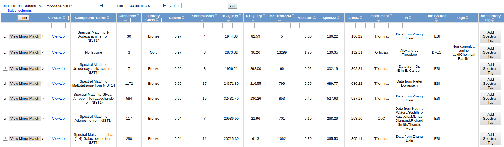
To view the quality of the MS/MS match, click "View Mirror Match" to display a mirror plot
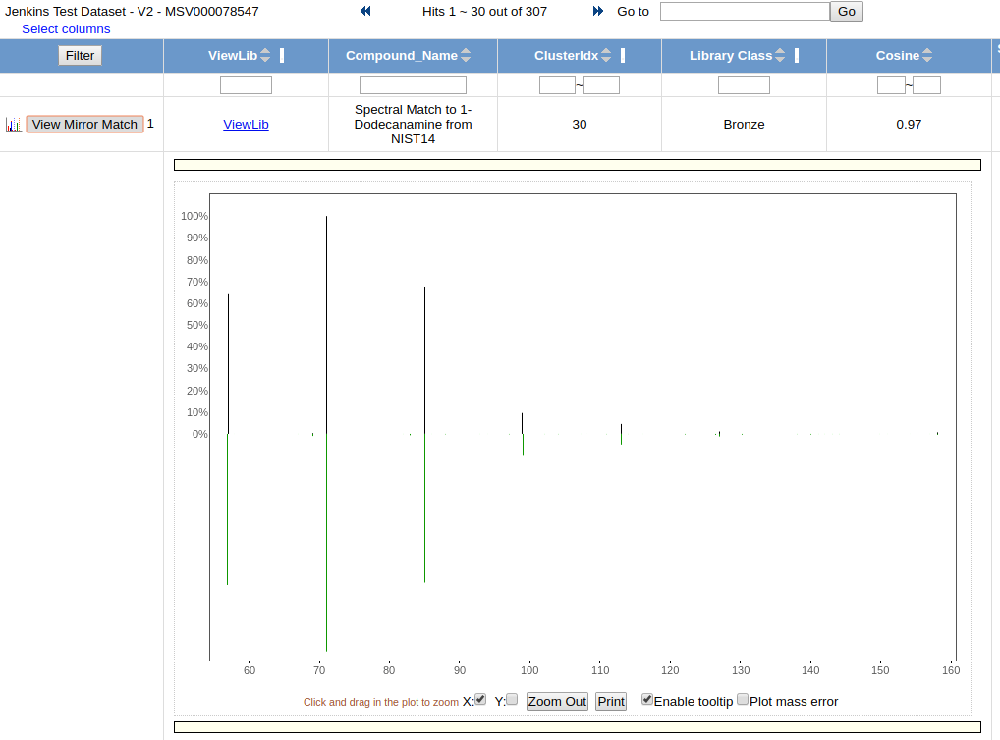
View All Clusters With IDs¶
View All Clusters allow a user to view the all consensus spectra in the molecular networking analysis.
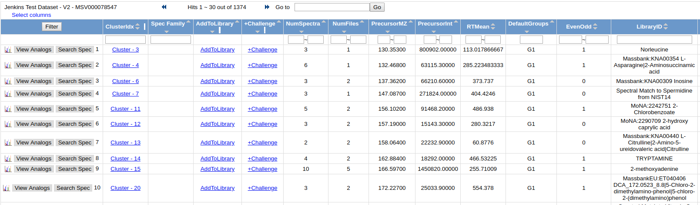
While Molecular Networking matches to all public reference libraries, the majority of molecules detected in untargeted LC/MS runs are unidentified. To help annotate these unidentified spectra, click the "AnnotatetoGNPS" to be taken to the view that allows you to choose a specific MS/MS spectrum to annotate. Then Click "AnnotatetoGNPS" to be taken to the annotation page with the spectrum prepopulated. Check out the details about annotation - Annotation Documentation.
To view all the input MS/MS spectra that went into the consensus spectrum, click the link in the "ClusterIdx" link
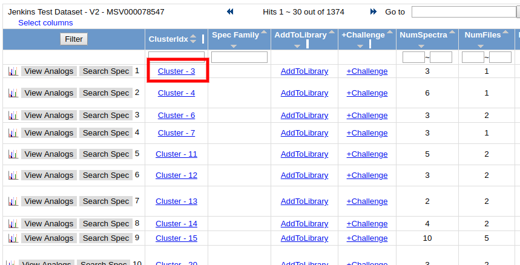
This brings up all the input MS/MS spectra. To visualize each spectrum, we can click the "View Spectrum" button.
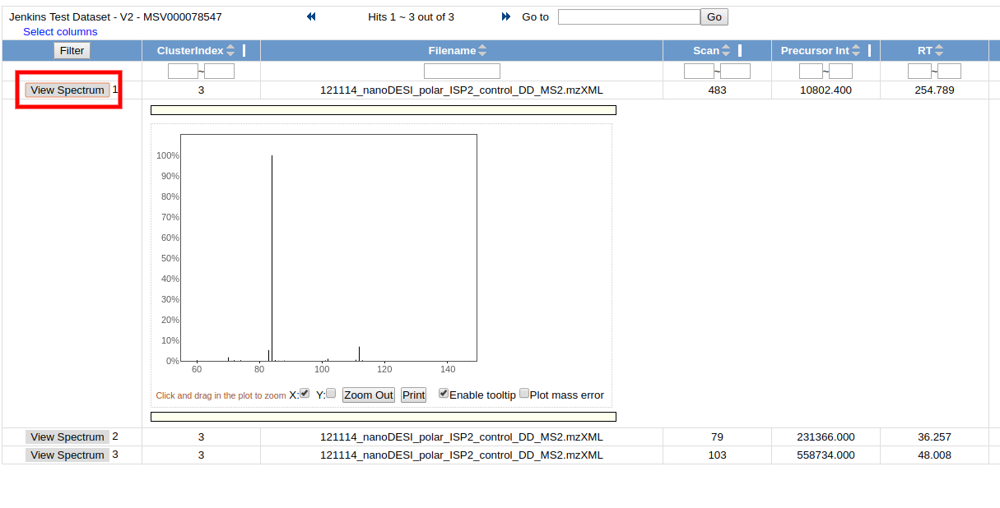
View Spectral Families¶
View Spectra Families allows users to look at the molecular networks at a higher level. Users can see all the distinct spectral families that comprise the entire molecular network. These spectral families are all the nodes that are connected to each other. From here users can tell how big each component is, how many raw spectra are captured by the particular component, and also the libraries identifications of all the spectra in each component.
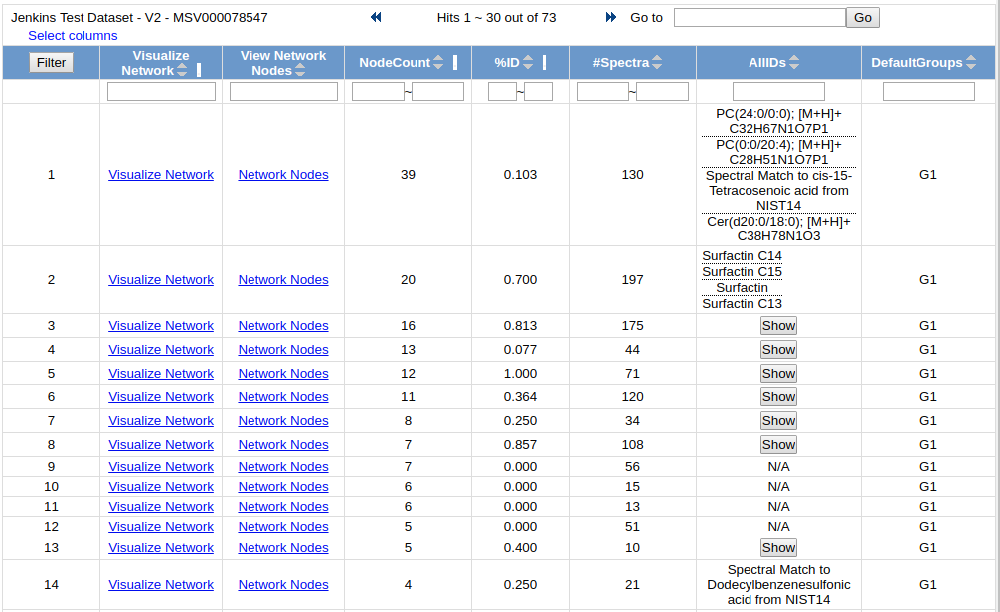
To visualize each network, click on the "Visualize Network" link
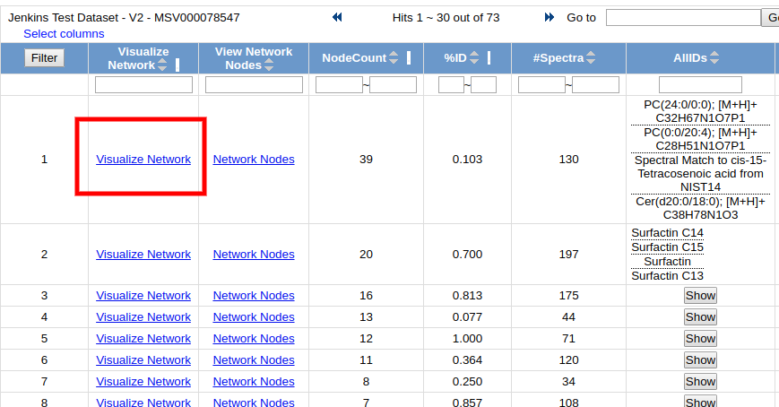
This brings up an in-browser visualization for a given spectral family
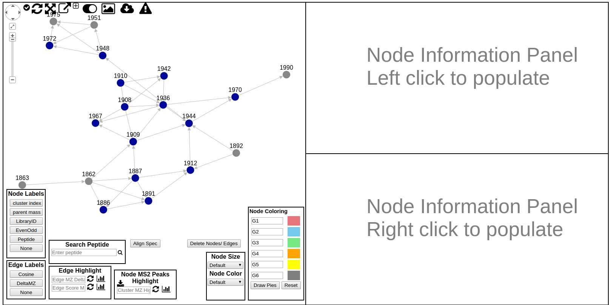
Here users can explore the specific spectral family in the molecular network. Each circle (node) in the left network panel represents a consensus spectrum and edge represents related fragmentation patterns. The default color of the nodes is gray, with blue nodes representing consensus MS/MS spectra that were identified by library search.
There is a lot to unpack in this online interface to explore the molecular networks. The following is a quick guide to all the features in this interface
- Node Labels
- Edge Labels
- Edge Highlight
- Node Highlights by MS2 Peak Search
- Align MS/MS spectra in right panels
- Node Size/Color Selection
- Node Pie Chart Coloring
- Rerun Network Layout
- Expand Network Window
- Toggle UI Widgets (Show/Hide)
- Download Spectral Family GraphML for Cytoscape
- Download Spectrum Peaks
- Annotate Spectrum with Peptide Sequence
- Large Spectrum Plot
- Show Peak m/z annotations in Spectrum Viewer
Network Labeling¶
The default labeling is the cluster/node index which is rather uninformative, but there are alternative labelings possible by selecting the appropriate node label from the Node Label legend box.
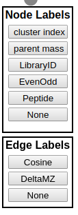
Node Labels
| Label | Description |
|---|---|
| cluster index | cluster index used globally for each cluster across all networking views |
| parent mass | precursor mass of the consensus spectrum |
| LibraryID | library identification name for the node if a library search were performed |
| EvenOdd | 1/0 for even or odd depending on the parent mass. Used for nitrogen rule |
| Peptide | peptide labeling |
| None | No Labeling |
Edge Labels
| Label | Description |
|---|---|
| Cosine | Cosine score measuring fragmentation similarity between two nodes |
| DeltaMZ | The Delta MZ of the spectra |
| None | No Labeling |
Node Pie Coloring¶
An additional way to customize the view of the networks is to color the nodes. By default the nodes are gray, but users can color the nodes based upon spectra counts of the groups they came from. By default the coloring labels will be based upon the default groups G1, G2, G3, G4, G5, and G6. The coloring of each node will be a pie, and the proportion colored of that pie is the proportion of the spectral counts coming from each respective group. Additionally, the Node Coloring legend describes the color for each group. Users can also use their own group names if they defined their own arbitrary groups when creating the network.
Custom Groups
If you would like to display custom groups instead of G1 through G6, you will be able to enter your own group name in the fields next to the colors. However, you will need to prefix you group name with GNPSGROUP:
To draw the pies, click "Draw Pies"
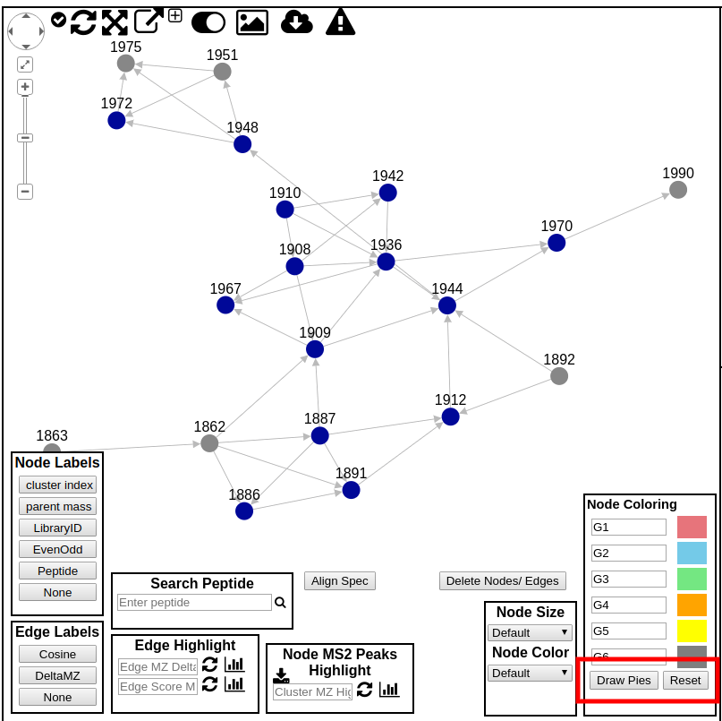
Edge Highlights¶
Edges by default include arrows pointing from low mass spectra to high mass spectra. Further, edges can also be colored. Users are able to enter a delta mz of their choice to highlight in the network. The highlighted edges will appear in red.
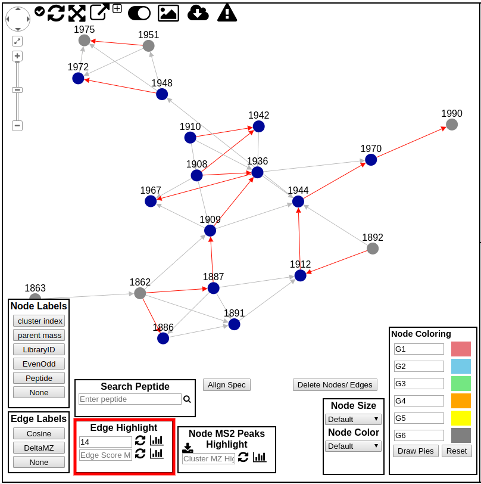
Edge Directions¶
The arrows between nodes in the molecular network point from higher m/z spectra to lower m/z spectra. This can facilitate tracking down identifying multiple extensions of a polymer or extension of a carbon chain.
Edge Delta Histogram¶
This histogram shows the distribution of the edge deltas.
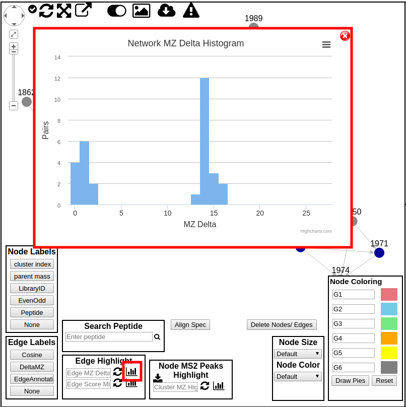
Clicking each peak in the histogram allows for highlighting the edges in the network.
Node Sizing/Color¶
The nodes size and color can be adjusted based upon several options:
- Spectrum counts
- Precursor intensity
- Number of Files
- Parent Mass
- Nitrogen Even/Odd
- Precursor Charge
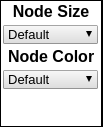
MS2 Peak Search in Molecular Network¶
To search for specific molecules in the molecular network that contain an MS2 fragment of interest, you can enter a product ion m/z you want to find.
First, we need to grab all the MS/MS spectra into the browser by clicking this button:
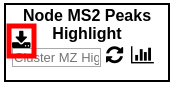
Then, we can enter the m/z we want to search for and click the update button. This will highlight which molecules contain the specific product ion.
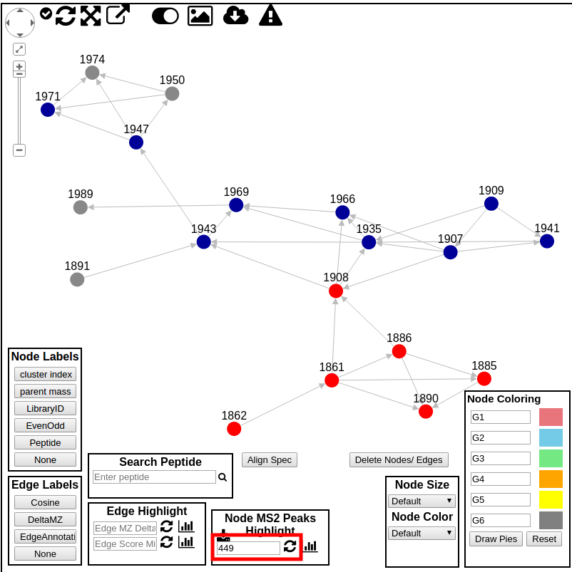
We can also see a histogram of all product ions from all MS2 spectra in the current network.
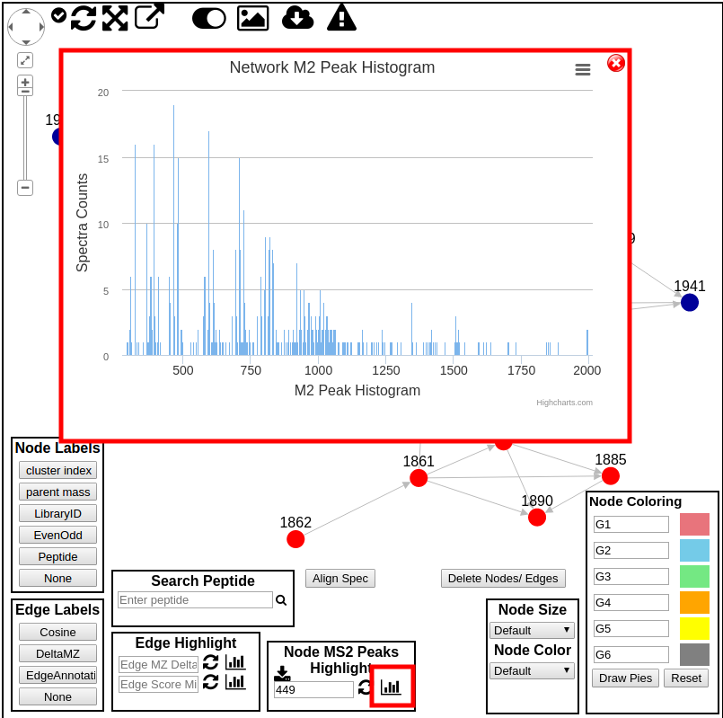
Detailed Interrogation of Network Spectra¶
While its great to visualize the network properly, to truly make sense of the network users must be able to interrogate the network metadata and examine the actual spectra. To this end, users are able to find out information about a particular node by simply hovering their mouse over node. This will bring up a hover box describing the node information. At present the display shows like this:
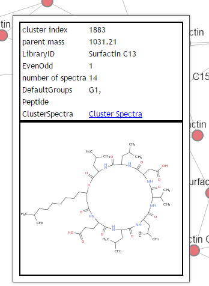
This shows basic information about the node, as well as the structure if the node is identified by library search and the structure was provided in the library spectrum.
To further investigate the network, users can left click on a node to plot the spectrum in the top right panel (right click to plot in bottom right panel), along with the spectrum information and structure if one is available.
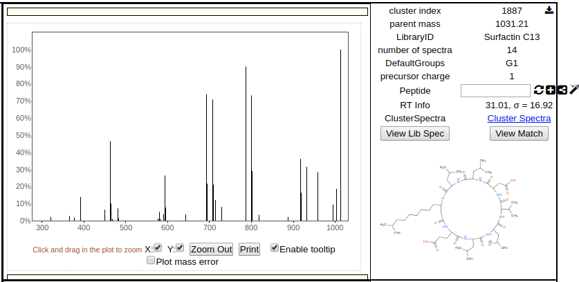
The spectrum image is interactive so users can zoom in and look at precisely at the spectrum to make sense of the data. Additionally users can compare two spectra in the network by simple right clicking on a different node to render its information in the bottom right panel.
Users can also click on an edge and both nodes that are connected to the edge are automatically displayed in the top and bottom right panels.
Examining Spectrum Spectrum Alignment¶
Users can quickly ascertain how two spectra align to each other at the peak level. By clicking the "Align Spec" button to obtain the score between the spectrum in the top and the spectrum in the bottom render panels.
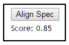
Additionally, the plots of the spectra will update to reflect the alignments shown here:
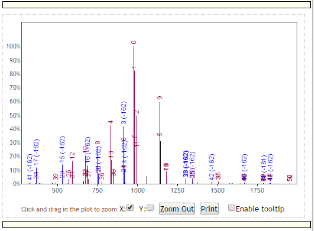
with red peaks representing peaks that match at the exact same masses between the top and bottom spectra, and blue peaks representing peaks matching at shifted masses. Additionally, each peak is labeled with a unique identification number that shows the correspondence of peak matches between the top and bottom spectra.
Network Spectra Library Matches¶
To view how exactly a spectrum in the network has matched to a library spectrum, users can click the "Show Library Match" in the side panel on the far right. This will bring up this middle panel shown below comparing the spectrum in the network with the library spectrum in green.
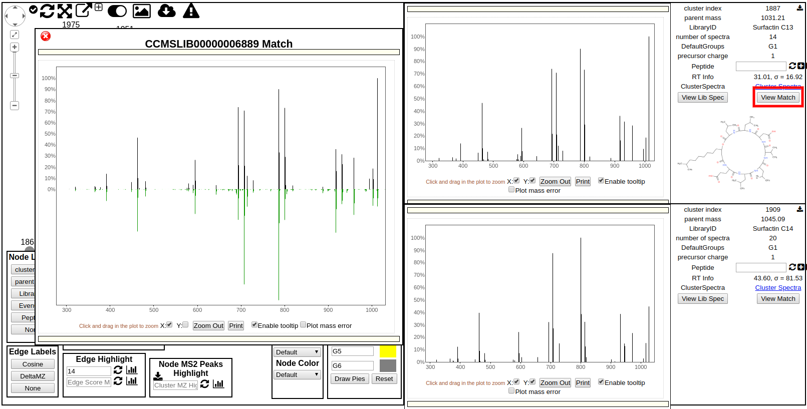
Network Screen Shot¶
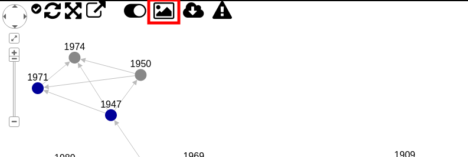
Download screenshot of the molecular network.
Network Layout Re-run¶
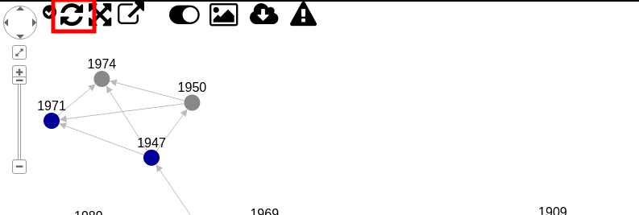
Rerun network layout to fit zoom and window.
Network Window Size¶
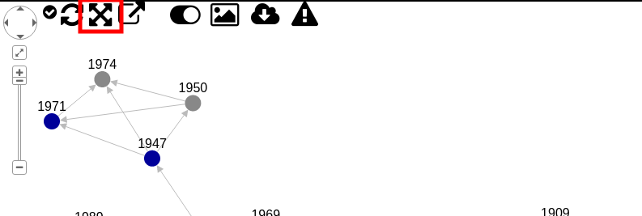
Max network view bigger to see more of the network with more room.
Pop up Window¶
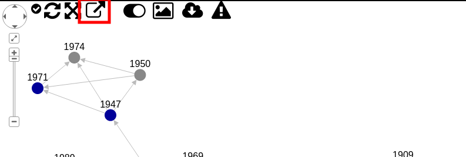
Pop out network visualizer into new window without top menu bars.
Sub-Network GraphML for Cytoscape¶
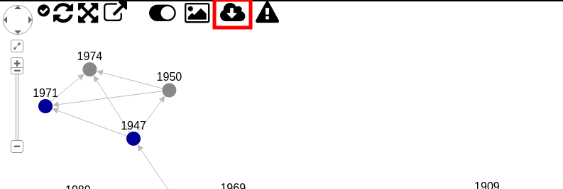
Download a GraphML of network and visualize in Cytoscape or other graph software.
Hide Widgets¶
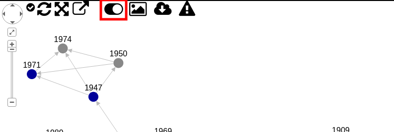
Show or hide user interface widgets.
View Principle Coordinate Analysis (PCoA) Plots¶
To view PCoA plots, please enable that output on the input page (default is on) in the "Advanced Output Options" section and enabling "Create Cluster Buckets and BioM/PCoA Plots output". This will create the appropriate data structures for PCoA analysis. To include additional metadata to color the nodes according to the sample types, include and add additional columns for metadata describing the experiment (see metadata documentation).
To view the PCoA plots when the parameters are appropriately set, click the "View Emporer PCoA Plot in GNPS" under the section "Advanced Views - Third Party Visualization" on the results page of your GNPS job.
This PCoA analysis measures the distance between each of the samples based on their overlapping molecules (by MSCluster). This emperor plot is generated by the Qiime software package. The distance metric is binary_jaccard.
Page Contributors¶